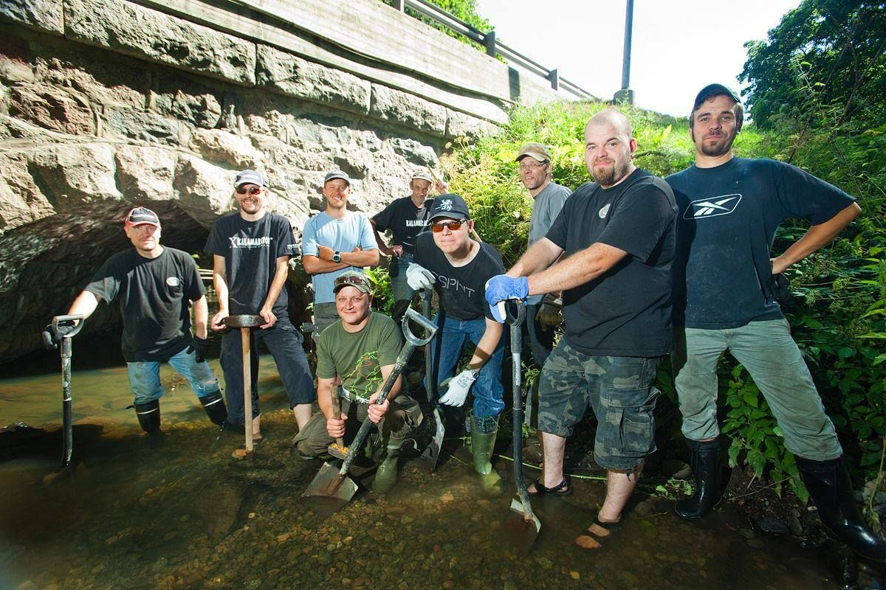
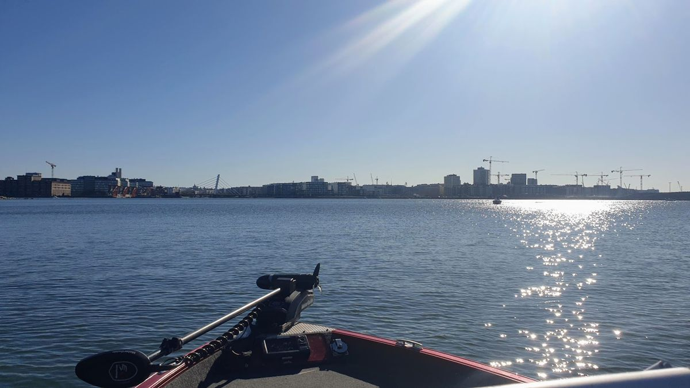
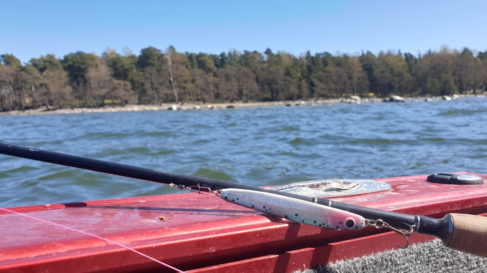
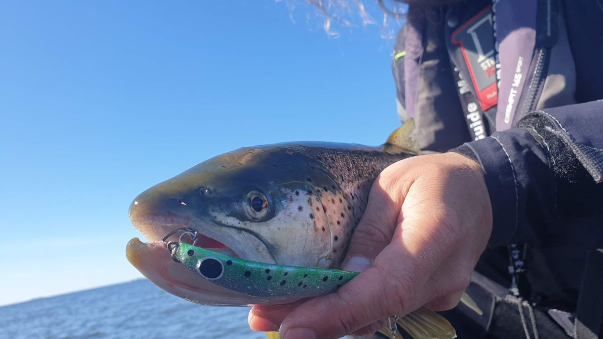
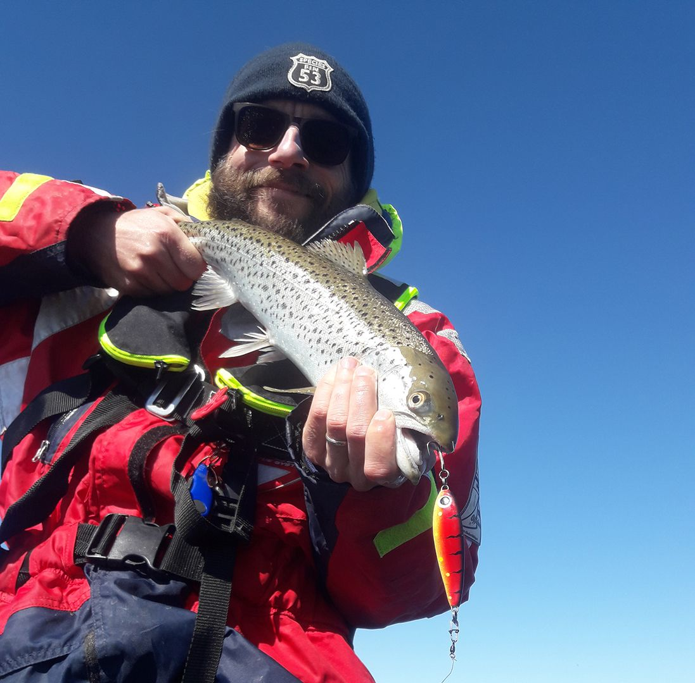
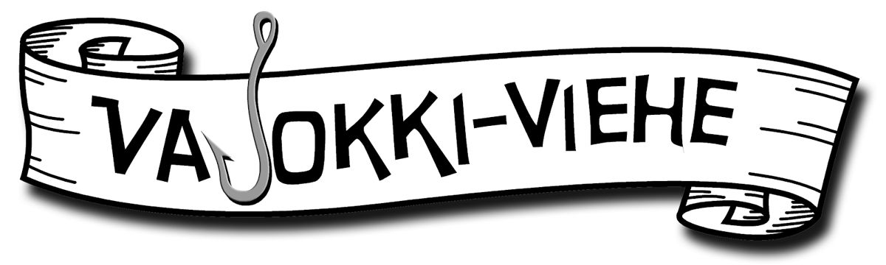
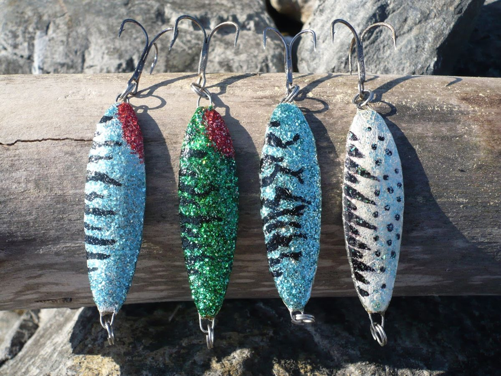
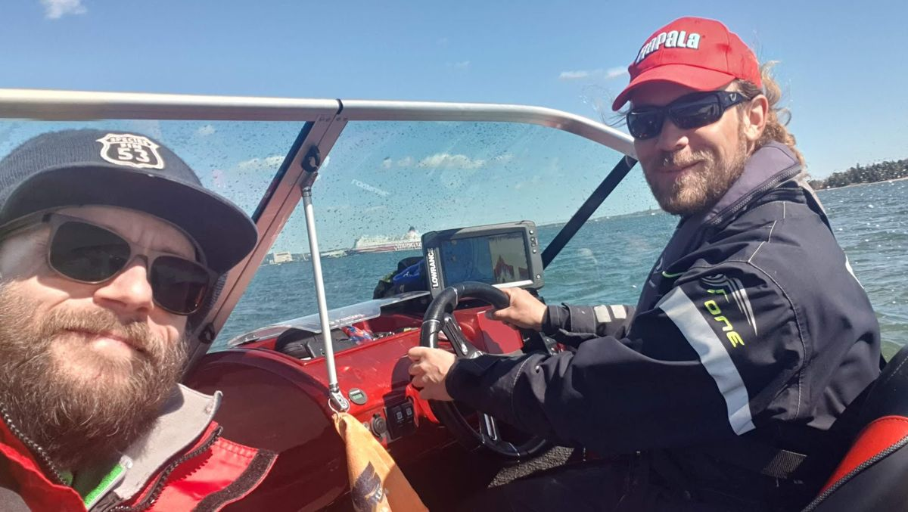

Blogitekstit · Toukokuu 2020
Vajokki Eskon kanssa taimenjahdissa – alkoiko legendan tarina huonosta tuurista?

Olin muutama vuosi takaperin kutsuvieraana Suomenlahden meritaimentoimikunnan tilaisuudessa, kertomassa Longinojasta ja paikalla oli monia tuttuja mm. virtavesien erikoismies Aki Janatuinen, luonnonvarakeskuksen tutkija Ari Saura ja Vantaan kaupungin kalastusmestari Markku Tiusanen ja monta muuta upeaa ihmistä. Yksi toimikunnan jäsen oli Vajokki-vieheiden tekijä ja syntyisä Esko Vuori.
Tuolloin kerroin Eskolle tavoitteesta vuodelle 2020 ja hän suostui kalareissulle oppaaksi.
Perjantai aamulla 8.5.2020 katsoin Facebook-messangeria;
Esko Vuori: Morjes, mites ois la aamu, puolpäivää. Onko
menoa?
Tästä se lähti. Retki oli sovittu.
"Nyt ajatuksena on katsoa miten itsensä voi elättää kalastus harrastuksella." - Esko Vuori
Näihin sanoihin päättyy Vajokki-vieheen kotisivuilta löytyvät historiaosio. Rakkaasta harrastuksesta työ, joka elättää. Upea tavoite mikä Vajokki -vieheen suosion kasvun myötä on tullut melkein mahdolliseksi. Paras myynti ja markkinointi on upeat saaliskuvat somessa ja puskaradioiden viestiketjuissa.
Vantaanjoki – Suomenlahden paras taimenjoki


Kotijoki, maitokahvin värinen virtaava likaviemäri kätkee sameuden sisään salaisuuden, jota ei moni uskoisi. Vantaanjoki, joka saa vedet 14 kunnan alueelta ja valuu veden verisuonina Riihimäeltä hiljalleen kohti Helsingin synnyinsijoja.
Entinen likaviemäri tuottaa Suomenlahteen taimentenvaelluspoikasia huimat määrät. Longinojan kaltaisia pieniä kunnostettuja lisääntymispuroja löytyy valuma-alueelta sadoittain. Näihin syksyisin nousevat suuret emotaimenet suunnistavat merten ulapoilta kohti lisääntymisalueita suvunjatkamispuuhiin.
Ilmakuvaa Google mapsista tutkiessani huomaan kuinka samea Vantaanjoen vesi värjää Helsingin edustan veden pitkälle Suomenlinnan ulkopuolelle.
Kohti ulappaa ja sen yli - upeat kalavedet nurkan takana


Heräsin sohvalta – oli kalastusretkiaamu. Edellisenä iltana muu perheeni kömpi nukkumaan makkariin minun jäädessä koneelle kirjoittamaan. Digitaalit piirtyivät puoli kuuteen. Sohvalla nukkumisen huonopuoli on, että aamulla kun siitä yrittää nousta löytää kipuhermot tien kolottavista lihaksista kohti hermokeskuksia ja päivä saa kivuliaan alun.
Tietokone auki, leimaus töihin. Bannerit neljään HappyAngler -verkkokauppaan paikoilleen ja leimaus ulos. Tänään olisi luvassa jotain hienoa, taimenjahtiin kotivesille Vajokki-vieheiden synnyttäjän Eskon kanssa.
Kahvia juodessani mietin; Olisiko nyt toisen taimenen aika ilmestyä Lajikalastus 2020 listaukselle?
Saavun satamaan hieman kahdeksan jälkeen, istahdan penkille ja kuuntelen takana parisuhteesta todennäköisesti keskustelevaa kanadanhanhea. Nappaan kuvan ja laitan sen viestinä Eskolle.
Oikea paikka, tulen ihan just. Tulee nopeasti vastauksena.
Jonotusnumerot pelipaikoille – yhteisö apuna


Matkalla kohti ulappaa kalastamme muutaman spotin, jotka on rannalta kalastettavissa ja tapaamme yhden venekunnan juuri lipumassa ajattelemallemme kohdalle.
"Jonotusnumeron tarvitsisi sinne, viisi, kuusi venettä jo heti aamusta paikalla, joten lähdettiin muualle." Kuuluu veneen kipparin suusta.
Esko vaihtaa kuulumisia ja kertoo päivän tavoitteestamme, toivotamme toisillemme kireitä siimoja ja jatkamme matkaa kohti ulappaa. Edessämme siintää meri, horisontissa näkyy Suomenlinnan vallit ja kymmeniä pienempiä luotoja. Kalastettavaa siis on, me emme odottele vuoroamme.
Ensimmäisen kalapaikan kohdalla saan kuulla vinkit millaisiin paikkoihin heittää, miten uittaa Vajokki-lusikoita ja miten lusikkamallit eroavat toisistaan. Tyhjää, nämä paikat pystyy tavoittamaan myös rannalta käsin ja tallennan ne mieleeni.
Seilaamme jälleen uuden paikan viereen ja aloitamme heittelyn rantaviivan tuntumaan. Veden kirkkaus yllätti, näen kivet ja vedenalaiset luotojen jatkeet helposti eikä Vantaanjoen sameus heikennä suuremmin näkyvyyttä.
Tuosta mä sain eilen 68 cm pituisen iltapistolla, taidan heittää vielä tuon kivikon kerran. KALA, huutaa Esko.
Savage Gearin Sandeel kelpasi kivikon kupeessa olleelle täpläkyljelle. Vieheiden profiili, malli ja koko sekä tietysti uintityyli voi olla se ratkaiseva juttu. Siksi mä tykkään heitellä myös muiden valmistajien vieheitä, toteaa Esko.
Väsyttäessäsi kalaa pidä vapa alhaalla, se vähentää kalan
hyppyhaluja.
Hypätessä kala usein irtoaa.
Kalalla on virtaa, näemme vain
vilkkuvan kyljen ja kuulemme tuulessa vinkuvan siiman ulinan.
Lopulta tanssi on ohi, kala on haavissa ja saa kuvauksen
jälkeen jatkaa uintiaan sumpussa. Väsytyksen lomassa sain tietoiskun, miten toimia,
kun on oman tanssihetkeni aika.


Vain hetkeä myöhemmin Vajokin vihreähopea Laihis nappaa toinen taimen, jonka lyhyen, mutta intensiivisen taistelun päätteeksi haavitsen. Noin 55 cm pulleassa kunnossa oleva evätön yksilö pääsee lajitoverinsa seuraksi sumppuun.
Jokainen heitto ja hetki, jonka kuuntelen kipparin tarinoita opettaa minua ymmärtämään merellistä taimenen kalastusta enemmän. Lämpötaskut ovat vain yksi asia, kivet, karikot, silakkaparvet, tuuli, aurinko ja se minkä väriset sukat ovat jalassa vaikuttavat kalan saamiseen.
Silakkaa naamariin ja rantamatalaan sulattelemaan, ehkä taimen toimii näin kuten me suomalaiset grillaajat. Satoi tai paistoi, on ulos päästävä ja saatava suuhun se kulinaarinen elämys, joka tulee mustakuorisen makkaran syömisestä sisätiloissa. Eskon ajattelema teoria voi hyvin pitää paikkansa, juuri pienet lämpöerot lahdelmissa erottavat ottipaikat kalapaikoista.
Tuttu vene lähestyy ja vaihdamme kuulumiset. Esko tuntee varmaan suurimman osan Stadin edustan taimenen kalastajista, vanhempia konkareita myöten. Nyt veneen kipparina on itselleni työelämästä ja kalastuspiireistä tuttu Kalastuslehden päätoimittaja Antti Zetterberg.
Vaihdan Savage Gearin Sandeelin jolla Esko kolusi äsken luodon matalia kivikkorantoja. Eteeni tarjotaan kattaus; Kulta-punainen Vajokki Pettäjä, Laihis ja Latta.
Otan tämän reunimmaisen. Kulta-punainen Pettäjä lentää hienosti ja tipahtaa kahden luodon välissä olevaan kohtaan. Selvästi syvempää, tästä pääsisi myös veneellä läpi.
En ole koskaan tuolla heittänyt, mutta mennään kokeilemaan. Syön ensiksi. Heittele sä, kuuluu suusta, joka on täynnä termarilämmintä papumössöä, toteaa Esko.


Kolmas heittoni Pettäjällä rannan tuntumaan ja vain muutama kammenkiertoa myöhemmin saan huutaa: KALA!
Olin sisäistänyt väsytysopit Eskon väsytyksistä; Pidän vavan alhaalla, jarrun tarpeeksi löysällä ja väsytän kalan rauhassa. Kala ei pompi vaan pysyy syvemmällä, väsytys ei kestä kauan ja lopulta lajipiste numero 33 on haavissa. Mittakala ja erinomainen eräksi otettava yksilö. Muutama kuva tuoreeltaan ja sumppuun odottamaan papin aamenta.
Vajokin historia alkoi karvaasta tappiosta


Vedenpintaa viistäen haahka toivottaa meidät tervetulleeksi seuraavaan kalapaikkaan ja merimetsot seuraavaan. Upeita luotoja, saaren kupeita, vedenalaisia kiviä ja toinen toistaan upeampia hetkiä. Auringon loistaessa kirkkaalta taivaalta.
Merellinen Helsinki näyttää parastaan, ulapalla seilaa purjevene, meidät ohittaa Skipperistä vuokrattu vene jonka kyydissä perhe nauttii aavan meren tuulista.
Retken loppupuolella kysyn Eskolta, mitkä ovat hänen ikimuistoisimpia hetkiänsä kalassa.
Vastaus tulee nopeasti:
"Ne hetket, kun saa omatekemällä
protovieheellä kalan, ja nyt myöhemmin, kun asiakkaat saavat tekemälläni vieheillä
kaloja." -Esko Vuori


Yksi hetki on hänelle ylitse muiden, tämä lukee myös nettisivujen
historiikissa, tästä se kaikki alkoi:
”Tähän nykyiseen tilanteeseen johtanut suurin yksittäinen
tapahtuma sattui kuitenkin keväällä 2008. Asuin Helsingissä opiskeluaikojeni
loppupuolta ja kalastus tapahtui rannalta käsin, toisin sanoen pikku budjetin
hommaa. Olin sirpalesaaren rannalta heittelemässä erästä pyytäväksi todettua
ison valmistajan rannikkovaappua ja kuinkas ollakaan, komea taimen sattui
valitsemaan sen. Tunteet pinnassa väsyttelin taimenta kohti matalaa
kivisärkkää, jonka rannalla seisoin yksin, lenkkarit jalassa ja tietenkin ilman
haavia.
Kallion luiska oli laaja ja loiva rannan kuivalle puolelle,
joten päätin vetää taimenen ylös vavalla. Taimen alkoi osoittamaan väsymisen
merkkejä, joten hetki toimia koitti. Muistaakseni koko taimen oli jo kuivalla
puolella, kun se luonnollisesti irtosi. Taimen tiesi totta kai mistä se oli
tullut ja se lähti läpsyttelemään hissukseen itseään kohti ulappaa, koska
laajahkolla luiskalla vettä oli noin parikymmentä senttiä.
Itse painuin lenkkarit jalassa ja tuulipuku kahisten perään
ja kuinka ollakaan lipathan siinä ensimmäisenä tuli vedettyä leväisen kallion
päällä. Kännykkä oli taskussa ja köyhänä opiskelijana ensimmäinen ajatus oli
heittää kapula kaaressa kuiville. Käännös kalan puolelle, jossa
määrätietoisesti ulapalle uivasta taimenesta näkyi enää vilaus, kun se katosi
syvempiin vesiin. Joitain kirosanojakin saattoi tässä vaiheessa suusta lentää,
kun liukastelin märkänä rannan kuivemmalle puolelle. Puhelin kasaan ja rannalle
jäänyt vapa käteen. Uistimessa oli jotain outoa. Ensimmäinen ajatus oli, että
uistinrengas oli pettänyt rytäkässä, koska ainokainen koukku puuttui. Lähempi
tarkastelu kertoikin, että muovisesta rannikkovaapusta onnettomasti niitattu
takalenkki oli mennyt koukkuineen päivineen kalan mukana. Runko oli takaa
halki, joten se oli mitä ilmeisimmin osunut kiveen jollakin rannansuuntaisella
heitolla. Tästä suivaantuneena ajattelin saman tien, että teen itse samanmoisen
kapistuksen, jossa on läpilanka.”
Edellinen lainaus on suora kopio Vajokki-vieheen nettisivulta, mutta minä kuulin sen täsmälleen samassa muodossa meren aaltojen siivittäessä tarinaa kohti kliimaksia.
Mitä jos karannut kala olisikin tullut ylös, olisiko Vajokin
syntytarina jäänyt toteutumatta?
Tätä mietimme hetken, nostamme Motor Guiden ylös ja otamme
suunnan kohti larua.
Vierestämme aloitti nousukiidon kyhmyjoutsen pariskunta;
Joutsen pari: Saari X saammeko lähtöluvan?
Saari X, lupa myönnetty.
Siiveniskut kerrallaan isot uljaat linnut kiihdyttivät ja lopulta nousivat ilmaan kadoten hiljalleen horisonttiin.
Tähän hetkeen oli hieno lopettaa upea kalastuspäivä. Helsingin saaristo, jotain ainutlaatuista ja niin lähellä mutta kaukana.


Jokainen tsäänssi on mahdollisuus, eletään nyt kun on taas
tilaisuus
Elämä on ihmisen parasta aikaa, eletään nyt
- Matti Nykänen
Tutustu Vajokki -vieheisiin ja tilaa ottipelisi tästä ja ota myös Intagramissa seurantaan tästä.
Seuraa ennätyksen etenemistä
Pidän kirjaa lajilistasta ja tarkemmasta retkidatasta Google -taulukossa, joka löytyy jokaisesta ennätysyrityksen postauksesta. Tästä linkistä taulukko avautuu uuteen ikkunaan.
Seurantatilanne löytyy myös blogini oikeasta yläreunasta.
Vuoden aikana ennätysyrityksessä kulkee mukaan myös tämä kalataitelija-graaffikko Sakke Yrjölän suunnittelema SPECIES FIN 53 -merkki.
Paitakulmassa painatin pipoon ja lippikseen saman merkin. Tavoitteeni on saada aikaiseksi 53 saaliskuvaa tekstin alussa tekemääni taulukkoon joissa kaikissa kuvissa näkyisi tuo kyseinen tunnus.
Paitakulma on Suomalainen perheyritys, joka haluaa panostaa laatuun ja asiakastyytyväisyyteen. Tutustu yrityksen palveluihin tästä.
2020 Esko Vuori longinoja SpeciesFIN53 Suomenlahden meritaimentoimikunta taimen Vajokki-viehe vantaanjoki